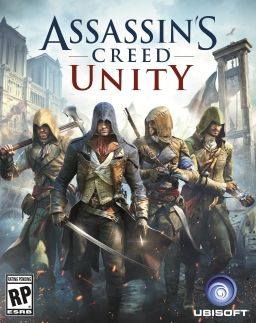
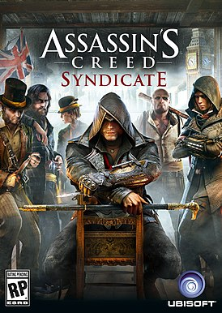
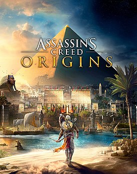
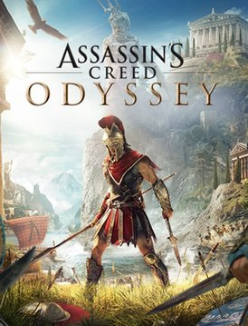

Cерия игр Assassin’s Creed
Assassin’s Creed — медиафраншиза французской компании Ubisoft, основанная на серии компьютерных игр. Первая игра серии — Assassin’s Creed — вышла в 2007 году. Помимо основной линейки игр был выпущен ряд спин-оффов. Игры основной серии, вышедшие до Assassin’s Creed Odyssey, относятся к жанру action-adventure; Assassin’s Creed Odyssey позиционируется разработчиками, как игра в жанре action RPG. Различные спин-оффы серии относятся к разным жанрам. Части франшизы неоднократно переиздавались на новых платформах.
Согласно отчёту, опубликованному Ubisoft в сентябре 2016 года, совокупные продажи игр серии Assassin’s Creed составили более 100 миллионов копий.
На данный момент серия насчитывает 23 игры, 12 из которых — игры основной серии. Основные игры в период с 2009 по 2015 год выходили ежегодно.
Assassin’s Creed

Assassin’s Creed (с англ. — «Кредо ассасина») — компьютерная игра в жанре action-adventure, разработанная компанией Ubisoft Montreal и изданная Ubisoft. Впервые игра была представлена на выставке X ’05, проводимой Microsoft. На E3 2006 игра была официально анонсирована для PlayStation 3 под названием Assassin’s Creed. Позже Ubisoft также заявила о выходе игры на Xbox 360 и Windows. Версия для консолей появилась в продаже в ноябре 2007 года, ПК-версия появилась в продаже 8 апреля 2008 года. Игра разрабатывалась людьми, которые участвовали в создании Prince of Persia: The Sands of Time. Музыку игры написал Йеспер Кюд.
5 февраля 2008 года ознаменовалось выходом приквела Assassin’s Creed — игры Assassin’s Creed: Altaïr’s Chronicles для Nintendo DS. 8 апреля 2008 года появилась расширенная версия Assassin’s Creed для Windows — Assassin’s Creed Director’s Cut Edition. Отличием является расширенный набор способов вести расследование.
На международной выставке Е3 в 2009 году была показана PlayStation Portable версия игры — Assassin’s Creed: Bloodlines, которая является прямым продолжением первой части игры. Она распространяется как на UMD-носителях, так и через сеть PlayStation Network.
Действие игры происходит параллельно в 2012 и 1191 годах. В первом случае главным протагонистом является бармен Дезмонд Майлс, похищенный учёными корпорации «Абстерго Индастриз». При помощи аппарата под названием "Анимус" они пытаются восстановить фрагмент из жизни далёкого предка Дезмонда — араба Альтаира ибн Ла-Ахада, ассасина, действовавшего в эпоху Крестовых походов, — чтобы получить некую необходимую им информацию.
Игра даёт нам возможность побывать в Масиафе, который в древние времена действительно был крепостью ассасинов. Основное же время герой проводит в трёх крупных городах, расположенных в Святой земле — Дамаске, Иерусалиме, Акре. Их архитектурный облик схож с оригинальным, при этом в Assassin’s Creed встречаются знаменитые исторические здания, например Храм Соломона. В игре описываются времена третьего Крестового похода (1191 год). Главные цели Альтаира в каждой из миссий, а также некоторые персонажи игры списаны с реальных исторических личностей: в частности, в сюжете фигурируют король Ричард I Львиное Сердце, его наместник в Акре Уильям (Вильгельм, Гильельмо) Монферрат, магистр ордена тамплиеров Робер де Сабле, Великий магистр ордена Госпитальеров Гарнье де Наплуз, основатель Тевтонского ордена Сибранд. А глашатаи в Иерусалиме и Дамаске упоминают султана Салах ад-Дина (Саладина). По сюжету Альтаир направляется к Ричарду Львиное Сердце с вестью о том, что Робер де Сабле готовит заговор с целью свержения короля. Тот не верит ассасину и предлагает так называемое испытание поединком. Перед смертью Робер признаётся в существовании заговора, но не против короля, а внутри братства. Игровой образ Робера де Сабле сильно отличается от реального: рыцари ордена тамплиеров сами выдвинули де Сабле на должность великого магистра за смелость и отвагу. В игре же тамплиер предстаёт алчным, хитрым и подлым.
Назад к меню
Assassin’s Creed II

Assassin’s Creed II ( рус. Кредо ассасина 2) — мультиплатформенная компьютерная игра в жанре action-adventure, продолжение игры Assassin’s Creed от компании Ubisoft. Официальный анонс состоялся 16 апреля 2009 года в журнале Game Informer. В рамках сюжетной кампании Дезмонд Майлс, главный герой сюжетной линии в настоящем времени переживает воспоминания своего дальнего предка — Эцио Аудиторе, молодого флорентийского аристократа. Игрок побывает в Италии эпохи Возрождения (события игры происходят с 1476 по 1499 год) и встретится с выдающимися людьми того времени — к примеру, с четой Медичи, Леонардо да Винчи и Никколо Макиавелли, а во врагах у героя будут числиться Родриго Борджиа, Франческо Пацци и Джироламо Савонарола. У персонажа появятся новые способности, к примеру, плавать и нырять, возможность выхватить оружие у врага во время боя.
На консоли игра вышла 17 ноября 2009 года в Северной Америке и 15 декабря в России. На Windows игра вышла 5 марта 2010 года. В отличие от первой части, которая получила сдержанные отзывы от критиков, Assassin’s Creed II получила всеобщее признание от рецензентов различных изданий. Assassin’s Creed II является первой частью в трилогии об Эцио: Assassin’s Creed: Brotherhood и Assassin’s Creed: Revelations, сиквел и триквел соответственно, вышли в 2010 и в 2011 годах.
Помимо обычного издания игры существует Assassin’s Creed II: Deluxe Edition, вышедшее 5 марта 2010 года. Издание дополнительно включает три бонусные карты, где можно добыть сокровища Тамплиеров: Дворец Медичи, Санта-Мария-деи-Фрари и Доки Арсенала.
Западные издания тепло приняли вторую часть франшизы. Из достоинств выделяют проработанный игровой процесс и графику. К минусам же относят не оригинальную концепцию и неудобное управление. Журнал Игромания поставил игре восемь с половиной баллов из десяти возможных.
Журнал GamePro признал Assassin’s Creed II лучшей игрой 2009 года. Также игрой года Assassin’s Creed II был признан по версии New York Times и Eurogamer Italy.
Назад к меню
Assassin’s Creed Brotherhood

Assassin’s Creed: Brotherhood (с англ. — «Кредо ассасина: Братство») — компьютерная игра в жанре action-adventure и стелс-экшена с видом от третьего лица, разработанная компанией Ubisoft Montreal для платформ Windows, Xbox 360 и PlayStation 3. Игра издана французской компанией Ubisoft 19 ноября 2010 года для консолей, а 17 марта 2011 года вышла версия для Windows. Является третьей игрой в серии игр Assassin’s Creed.
События игры развиваются в конце XV — начале XVI века. Действие в сегодняшнем времени происходит на территории Италии. Assassin’s Creed: Brotherhood является прямым сиквелом игры Assassin's Creed II. Сюжет развивается непосредственно после окончания событий оригинальной игры. Главным героем игры является итальянский дворянин-ассасин Эцио Аудиторе да Фиренце, который продолжает свою борьбу с орденом тамплиеров в Риме.
Игра Assassin’s Creed: Brotherhood продолжает сюжетную линию Эцио. Выпущено продолжение Assassin's Creed: Revelations, которое продолжает сюжетную ветку Эцио Аудиторе да Фиренце.
Прорисовка игрового мира заслуживает похвалы — Рим эпохи Возрождения и все самые известные достопримечательности представлены в игре очень красиво и реалистично. В большинстве из них игроку предоставляется возможность побывать. Кроме Рима, в ряде миссий главный герой побывает в пригороде Феррары, Альбанских горах и даже рядом с Неаполем. Однако, в свободном режиме эти локации недоступны для посещения. Также, в начале игры и в нескольких заданиях-воспоминаниях игрок на короткое время вернётся в знакомые места предыдущей игры: Флоренцию, Венецию и Монтериджони.
Assassin’s Creed Brotherhood получила премию BAFTA в области игр 2011 года в номинации «Action».
Назад к меню
Assassin’s Creed Revelations

Assassin’s Creed: Revelations (рус. Кредо ассасина: Откровения) — компьютерная игра в жанре приключенческого боевика (англ. Action-adventure), разработанная студией Ubisoft Montreal совместно с подразделениями компании Ubisoft в Анси, Бухаресте, Квебеке, Киеве, Мальмё и Сингапуре. Игра издана компанией Ubisoft на игровых приставках PlayStation 3 и Xbox 360 и Microsoft Windows. Четвёртая по счёту игра в серии Assassin’s Creed и третья, финальная часть истории о жизни Эцио Аудиторе да Фиренце, начатой в игре Assassin's Creed II.
Игра была выпущена 15 ноября 2011 года в Северной Америке, Европе и 1 декабря в Японии для игровых приставок. 29 ноября в Северной Америке, 1 декабря в России и 2 декабря в Европе для персональных компьютеров. Издателем игры на территории России и стран СНГ является компания «Акелла».
Главный город в Assassin’s Creed: Revelations — Константинополь, столица Османской империи. Площадь города составляет примерно 80 % от площади Рима, главного города Assassin’s Creed: Brotherhood. Но в отличие от Рима в Константинополе нет тихих деревушек в сельской местности. Город очень плотно застроен и на улицах ходят огромные толпы людей.
Константинополь разделён на две части заливом Золотой Рог. В северной части города находится Галата, район иностранцев и купцов. Главное убежище ассасинов находится именно там. В большей, южной части города находятся Имперский, Баязид и Константинов районы.
Помимо обычного издания игры существует Assassin’s Creed Revelations — Gold Edition, которое уже содержит все три дополнения. Издание вышло 29 марта 2012 года.
Назад к меню
Assassin’s Creed III

Assassin’s Creed III (рус. Кредо убийцы 3) — компьютерная мультиплатформенная игра из серии Assassin’s Creed в жанре action-adventure, разработанная компанией Ubisoft Montreal для платформ PlayStation 3, Xbox 360, Wii U, Windows. В игре представлены новый главный герой и новое место действия. Игра вышла на консолях PlayStation 3 и Xbox 360 31 октября 2012 года, версия для Windows вышла 21 ноября 2012 года, для Wii U — 30 ноября 2012 года вместе с релизом приставки. Обновлённая версия вышла 29 марта 2019 года на PlayStation 4, Xbox One, Windows и 21 мая 2019 года на Nintendo Switch.
В первый месяц после релиза было реализовано 7 млн копий игры, что делает её самой быстропродаваемой игрой в истории Ubisoft.
Assassin’s Creed III относится к жанру action-adventure с элементами стелс-экшена. События игры происходят в открытом мире, который представлен несколькими локациями. В Assassin’s Creed III представлены города Бостон и Нью-Йорк, а также территория Фронтира.
Игра имеет 2 сюжетные линии: присутствуют сюжетная линия в прошлом времени, действие которой разворачивается во второй половине XVIII века и сюжетная линия в настоящем, события которой происходят в 2012 году. Игрок может свободно переключаться между ними.
Игра заняла второе место в номинации «Игра года» (2012) журнала «Игромания» и получила награду «Сценарий года», а также победила в спецноминации «Лучшая Action-adventure с открытым миром» по версии сайта igromania.ru.
Назад к меню
Assassin’s Creed IV: Black Flag

Assassin’s Creed IV: Black Flag (рус. Кредо ассасина 4: Чёрный флаг) — мультиплатформенная компьютерная игра в жанре приключенческий боевик, разработанная компанией Ubisoft Montreal и изданная Ubisoft. Является шестой основной игрой в серии Assassin’s Creed. Выход игры состоялся 29 октября 2013 года в версиях для PlayStation 3, Xbox 360, Wii U. Выход версии для Windows состоялся 21 ноября 2013 года. На Playstation 4 и Xbox One 15 ноября 2013 года и 22 ноября 2013 года соответственно. Версия для Nintendo Switch вышла 6 декабря 2019 года.
Игра является продолжением Assassin’s Creed III, где главным героем является аналитик Абстерго, изучающий генетическую память Дезмонда Майлса. В историческом периоде протагонистом является Эдвард Кенуэй (англ. Edward Kenway), отец Хэйтема Кенуэя и дед Коннора из Assassin’s Creed III; действие новой игры разворачивается в Золотую Эпоху Пиратства, в Карибском море на нескольких островах, в том числе Ямайке, Кубе и Багамах.
В Assassin’s Creed IV Black Flag появилась возможность формировать свой флот из взятых на абордаж кораблей, а затем отсылать их на заработок золота, ресурсов и других наград — таких, как карты чертежей, предметы кастомизации и интерьера Убежища. Это мини-игра, которая доступна либо через карту в каюте капитана и в Убежище, либо через приложение-компаньон.
Журнал «Игромания» сдержанно оценили игру, сказав, что «четвёртый Assassin’s Creed — устаревший, местами кривобокий и неизобразительный экшен, чьи создатели выжимают последние соки из придуманной шесть лет назад формулы».
Во всех версиях игры для PS3 и PS4 доступно 60 минут эксклюзивного геймплея (3 последовательных миссии) за Авелину де Гранпре; также данный контент доступен в издании Deluxe Edition на PC.
Назад к меню
Assassin’s Creed Rogue

Assassin’s Creed Rogue (рус. Кредо Ассасина: Изгой) — компьютерная игра из серии Assassin’s Creed в жанре action-adventure с элементами стелс-экшена, которую разработала компания Ubisoft для платформ PlayStation 3 и Xbox 360. Версия игры для персональных компьютеров вышла 10 марта 2015 года. Так же официально был анонсирован выход обновлённой версии для платформ PlayStation 4 и Xbox One, который состоялся 20 марта 2018 года. Релиз версии для Nintendo Switch состоялся 6 декабря 2019 года.
Игроки смогут исследовать северную часть Северной Америки — замёрзшее побережье Атлантики, территорию индейцев-апачи, долину рек и Нью-Йорк. Город был воссоздан в точности с реальным прототипом XVIII века. Разработчики усовершенствовали морские путешествия и сражения, которые были прямо позаимствованы из Assassin’s Creed IV: Чёрный Флаг.
Игрок будет управлять новым кораблём под названием «Морриган». Этот корабль хорошо подходит для путешествия по суровым морям Атлантики и не боится глыб льда. Он оборудован бочками с нефтью и ружьями Пакла, которые позволят уничтожить вражеские корабли, а также айсберги. Однако ассасины постоянно будут его преследовать и штурмовать различными способами. Шэю жизненно важно сохранить корабль и минимизировать потери среди команды.
У Шэя в экипировке будет сабля, короткий меч, пневматическое ружьё, пистолет, шэнбяо и гранаты.
Все дополнения на Windows вышли одновременно с выходом основной игры — 10 марта 2015 года.
Назад к меню
Assassin’s Creed Unity

Assassin’s Creed Unity (с англ. — «Кредо ассасина: Единство») — компьютерная игра из серии Assassin’s Creed в жанре action-adventure, которую разработала компания Ubisoft для платформ PC, PlayStation 4 и Xbox One.
Действие игры разворачивается в Париже в XVIII веке. Разработчики представили игрокам нового ассасина австрийско-французского происхождения по имени Арно Виктор Дориан. В игре также появился кооперативный режим максимум для 4 человек.
Ubisoft взяла в качестве основной сюжетной линии события французской революции 1789 года, когда Франция перешла от монархии к республике. Основные события разворачивались в течение 5 лет, начиная с взятия Бастилии и похода на Версаль до казни короля Людовика XVI и Термидорианского переворота. Именно в эту эпоху сословные привилегии были отменены и впервые были закреплены права человека.
В игре новая механика паркура, позволяющая перемещаться по парижским стенам и зданиям без каких-либо помех. Были добавлены новый режим стелса, система укрытий и техника манипуляции толпой. Также появилось дерево навыков, благодаря которому игрок может развивать своего персонажа, выбирая при этом свой стиль игры.
Во многие здания Парижа можно входить сразу, не дожидаясь, когда произойдёт загрузка. Также на карте может быть одновременно 5000 AI-персонажей.
Назад к меню
Assassin’s Creed Syndicate

Assassin’s Creed Syndicate (рус. Кредо ассасина: Синдикат) — компьютерная игра в жанре action-adventure, девятая в серии Assassin’s Creed, разработанная компанией Ubisoft Quebec и выпущенная компанией Ubisoft. Выход игры состоялся 23 октября 2015 года на платформах PlayStation 4 и Xbox One и 19 ноября 2015 года на PC (Windows).
Действия игры разворачиваются во времена Промышленной революции в викторианском Лондоне 1868 года.
В центре сюжета прошлого находятся ассасины-близнецы Джейкоб и Иви Фрай, которые прибывают в Лондон, чтобы освободить город от власти тамплиеров. Для этого Джейкоб основывает собственную уличную банду под названием «Грачи» и начинает борьбу с «Висельниками», бандой, контролируемой тамплиерами. В то же время Иви и глава ячейки ассасинов в Лондоне Генри Грин пытаются найти «Плащаницу Эдема», ещё один артефакт Предтеч, которую также хочет заполучить великий магистр Ордена тамплиеров Кроуфорд Старрик. По ходу игры главные герои встретят множество исторических личностей таких как: Чарльз Диккенс, Александр Грейам Белл, Чарльз Дарвин, Карл Маркс, Флоренс Найтингейл, Артур Конан Дойл, Бенджамин Дизраэли, Королева Виктория.
В отличие от предыдущих частей, в Assassin’s Creed Syndicate не будет многопользовательского режима, что подтвердил директор Ubisoft Ив Гиймо.
13 мая 2015 года были анонсированы пять вариантов издания игры .
Назад к меню
Assassin’s Creed Origins

Assassin’s Creed Origins (рус. Assassin’s Creed Истоки) — мультиплатформенная компьютерная игра в жанре Action/RPG, разработанная студией Ubisoft Montreal и издана компанией Ubisoft. Является десятой игрой из одноимённой серии игр. Выпуск игры состоялся 27 октября 2017 года на платформах Windows, PlayStation 4 и Xbox One.
Действие игры разворачивается в Эллинистическом Египте во время правления Клеопатры. Главным героем выступает Байек — меджай, который защищает свой народ от угроз. Открытый мир позволяет игрокам свободно перемещаться по Египту. Игра воспроизводится от третьего лица, и её мир можно исследовать пешком, на лошади, на верблюде или на лодке.
По словам исполнительного директора Ubisoft Ива Гиймо, за десять дней на рынке было продано в два раза больше копий Assassin’s Creed: Origins, чем два года назад сумела добиться Assassin’s Creed: Syndicate за тот же период.
Игрок управляет египетской исследовательницей Лейлой Хассан (англ. Layla Hassan), которая исследует память последнего меджая — Байека из Сивы и его жены Айи из Александрии. Вместе они помогают Клеопатре в гражданской войне против её брата Птолемея XIII и закладывают основы Братства Ассасинов.
Игра Assassin’s Creed Origins получила в целом положительные отзывы в игровой прессе с отдельными критическими замечаниями. По мнению рецензентов, новая часть франшизы удачно сочетает в себе классические элементы серии с обновлёнными механиками, приближающими её к успешным проектам в жанре RPG. Больше всего похвалы заслужил проработанный сеттинг, который журналисты назвали «потрясающей культурологической энциклопедией».
Назад к меню
Assassin’s Creed Odyssey

Assassin’s Creed Odyssey (рус. Кредо ассасина: Одиссея) — мультиплатформенная компьютерная игра в жанре Action/RPG, разработанная студией Ubisoft Quebec и изданная компанией Ubisoft. Является одиннадцатой игрой в серии игр Assassin’s Creed. Релиз состоялся 5 октября 2018 года на платформах Windows, PlayStation 4, Xbox One, а также Nintendo Switch (только в Японии).
События игры разворачиваются в эпоху Древней Греции во время Пелопоннесской войны. Assassin’s Creed Odyssey стала приквелом Assassin’s Creed Origins. Игроку предоставлены на выбор два главных героя: спартанские наёмники Алексиос и Кассандра, являющиеся потомками легендарного царя Леонида.
В Assassin’s Creed Odyssey делается ещё больший упор на ролевую составляющую, чем в предыдущих играх серии. В игре присутствует интерактивная система диалогов, нелинейные квесты, различные концовки и возможность завести роман с персонажами любого пола, вне зависимости от пола игрока. Игрок может выбрать пол своего персонажа. В отличие от Assassin’s Creed Syndicate переключаться между персонажами нельзя, выбор делается лишь раз в начале игры. Также он носит косметический характер и никак не повлияет на сюжет или геймплей.
Главные герои — Алексиос и Кассандра, брат и сестра, являющиеся наёмниками (мистиями) и потомками спартанского царя Леонида. Они сражаются, используя клинок копья своего предка, который наделяет их в бою особыми способностями. Система развития персонажа представляет собой три древа способностей: ассасина, концентрирующегося на скрытности, воина с упором на боевые навыки и охотника, позволяющего лучше стрелять из лука. Доступны различные элементы снаряжения — нагрудники, пояса, шлемы, ботинки и наручи, которые можно комбинировать между собой и улучшать. Функцию орлиного зрения у главных героев подобно Байеку из Assassin’s Creed Origins выполняет ручной орёл Икар. Уровень врагов теперь увеличивается вместе с уровнем персонажа. Вернулась шкала известности — при совершении преступлений на глазах у других она будет расти, и игрока могут объявить в розыск.
Для Assassin’s Creed Odyssey было выпущено множество бесплатного и платного дополнительного контента разного масштаба: от наборов снаряжения до крупных дополнений.
Назад к меню
Assassin’s Creed Valhalla

Assassin’s Creed Valhalla (рус. Кредо ассасина Вальгалла) — мультиплатформенная компьютерная игра в жанре action/RPG, разработанная студией Ubisoft Montreal и изданная компанией Ubisoft. Является двенадцатой игрой в серии игр Assassin’s Creed. Выход игры на платформах Windows, PlayStation 4, Xbox One и Xbox Series X/S состоялся 10 ноября 2020 года, выход на PlayStation 5 состоялся 12 ноября 2020 года.
Действие игры разворачивается в IX веке на территории Англии, в эпоху враждующих королевств и завоеваний викингов. Главным героем является норвежский викинг Эйвор, которой предстоит найти для своего клана новый дом на чужеродной земле. Пол героя можно менять на протяжении всей игры в любой момент.
Действие игры начинается в 873 году во времена завоеваний викингов. Игроку предстоит взять на себя роль викинга Эйвор, ведущего своих сородичей от берегов холодной Норвегии до плодородных земель Англии в поисках нового дома. Клану Эйвор противостоят лидеры четырёх англо-саксонских королевств: Уэссекса, Нортумбрии, Восточной Англии и Мерсии во главе с Альфредом Великим. Также Эйвор предстоит встретиться с Незримыми и помочь им в борьбе против Ордена древних. Как и в предыдущей части серии в XXI веке продолжается история Лейлы Хассан. Помимо Англии и Норвегии действие игры также происходит на территории Северной Америки, под названием Винланд и в фантастических мирах: Асгарде, Йотунхейме и Вальхалле.
Главные герои — Алексиос и Кассандра, брат и сестра, являющиеся наёмниками (мистиями) и потомками спартанского царя Леонида. Они сражаются, используя клинок копья своего предка, который наделяет их в бою особыми способностями. Система развития персонажа представляет собой три древа способностей: ассасина, концентрирующегося на скрытности, воина с упором на боевые навыки и охотника, позволяющего лучше стрелять из лука. Доступны различные элементы снаряжения — нагрудники, пояса, шлемы, ботинки и наручи, которые можно комбинировать между собой и улучшать. Функцию орлиного зрения у главных героев подобно Байеку из Assassin’s Creed Origins выполняет ручной орёл Икар. Уровень врагов теперь увеличивается вместе с уровнем персонажа. Вернулась шкала известности — при совершении преступлений на глазах у других она будет расти, и игрока могут объявить в розыск.
Официальный анонс игры состоялся 29 апреля 2020 года в ходе 8-часовой онлайн-трансляции. На следующий день компания Ubisoft представила дебютный трейлер и скриншоты игрового мира.
Назад к меню